전자기사 (2003-05-25 기출문제)
1과목: 전기자기학
1. 자유공간 중에서 자계 H =xz2ax[A/m]일 때 0 ≤ x ≤ 1, 0≤z≤1, y=0인 면을 통과하는 전전류는 몇 A 인가?
- 0.5
- 1.0
- 1.5
- 2.0
(정답률: 알수없음)

2. 균일한 자계에 수직으로 입사한 수소이온의 원운동의 주기는 2π×10-5 sec 이다. 이 균일 자계의 자속밀도는 몇 Wb/m2 인가? (단, 수소이온의 전하와 질량의 비는 2×107 C/kg 이다.)
- 2.5×10-3
- 3.2×10-3
- 5×10-3
- 6.2×10-3
(정답률: 알수없음)
3. 무손실 전송회로의 특성 임피던스를 나타낸 것은?
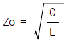
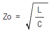
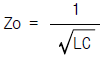
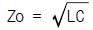
(정답률: 알수없음)
4. 그림에서 단자 ab간에 V의 전위차를 인가할 때 C1의 에너지는?
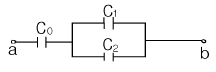
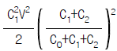
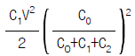
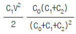
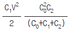
(정답률: 알수없음)
5. 그림과 같은 동축원통의 왕복 전류회로가 있다. 도체 단면에 고르게 퍼진 일정 크기의 전류가 내부 도체로 흘러 들어가고 외부 도체로 흘러 나올 때 전류에 의하여 생기는 자계에 대하여 옳지 않은 설명은?
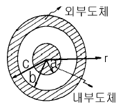
- 내부 도체내(r＜a)에 생기는 자계의 크기는 중심으로부터 거리에 비례한다.
- 두 도체사이(내부공간)(a＜r＜b) 에 생기는 자계의 크기는 중심으로부터 거리에 반비례한다.
- 외부 도체내(b＜r＜c)에 생기는 자계의 크기는 중심으로부터 거리에 관계없이 일정하다.
- 외부 공간(r＞c)의 자계는 영(0)이다.
(정답률: 알수없음)
6. 평행판 콘덴서에 어떤 유전체를 넣었을 때 전속밀도가 2.4×10-7C/m2이고, 단위 체적 중의 에너지가 5.3×10-3Ｊ/m3 이었다. 이 유전체의 유전률은 몇 F/m 인가?
- 2.17×10-11
- 5.43×10-11
- 5.17×10-12
- 5.43×10-12
(정답률: 알수없음)
7. 그림과 같이 구형의 자성체가 병렬로 접속된 경우 전체의 자기저항 RT는 몇 AT/Wb가 되겠는가?(단, 가로방향 즉, 200㎜방향임)
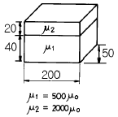
- RT = 2.7×104
- RT = 5.3×104
- RT = 1.1×10-6
- RT = 1.9×10-6
(정답률: 알수없음)
8. 그림에서 전계와 전속밀도의 분포 중 맞는 것은?(단, 경계면에 전하가 없는 경우이다.)
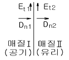
- Et1=0, Dn1=ρs
- Et2=0, Dn2=ρs
- Et1=Et2, Dn1=Dn2
- Et1=Et2=0, Dn1=Dn2=0
(정답률: 알수없음)
9. 간격 d의 평행 도체판간에 비저항ρ인 물질을 채웠을 때 단위 면적당의 저항은?
- ρd
- ρ/d
- ρ-d
- ρ+d
(정답률: 알수없음)
10. 대전 도체 표면의 전계의 세기는?
- 곡률이 크면 커진다.
- 곡률이 크면 적어진다.
- 평면일 때 가장 크다.
- 표면 모양에 무관하다.
(정답률: 알수없음)
11. 진공내의 점(3,0,0)[m]에 4×10-9 C의 전하가 있다. 이 때 점(6,4,0)[m]의 전계의 크기는 몇 V/m 이며, 전계의 방향을 표시하는 단위벡터는 어떻게 표시되는가?
- 전계의 크기: 36/25, 단위벡터: 1/5(3ax+4ay)
- 전계의 크기: 36/125, 단위벡터: 3ax+4ay
- 전계의 크기: 36/25, 단위벡터: ax+ay
- 전계의 크기: 36/125, 단위벡터: 1/5(ax+ay)
(정답률: 알수없음)
12. 진공 중에 선전하 밀도가 λ[C/m]로 균일하게 대전된 무한히 긴 직선도체가 있다. 이 직선도체에서 수직거리r[m]점의 전계의 세기는 몇 V/m 인가?
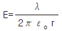
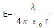
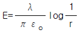
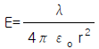
(정답률: 알수없음)
13. 와전류의 방향은?
- 일정하지 않다.
- 자력선의 방향과 동일하다.
- 자계와 평행되는 면을 관통한다.
- 자속에 수직되는 면을 회전한다.
(정답률: 알수없음)
14. 평행한 두 도선간의 전자력은? (단, 두 도선간의 거리는 r[m]라 한다.)
- r2에 반비례
- r2에 비례
- r에 반비례
- r에 비례
(정답률: 알수없음)
15. 자기인덕턴스 L1[H], L2[H]와 상호인덕턴스 M[H]와의 결합계수는?
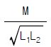
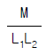
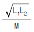
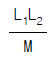
(정답률: 알수없음)
16. V=x2+y2[V]의 전위 분포를 갖는 전계의 전기력선의 방정식은? (단, A는 임의의 상수이다.)
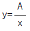
- y=Ax
- y=Ax2
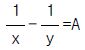
(정답률: 알수없음)
17. 지구는 태양으로부터 P[kW/m2]의 방사열을 받고 있다. 지구 표면에서의 전계의 세기는 몇 V/m 인가?
- 377P
- p/377
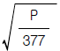
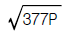
(정답률: 알수없음)
18. 막대자석의 회전력을 나타내는 식으로 옳은 것은?(단, 막대자석의 자기모멘트 M [wb.m]와 균등자계 H [A/m]와의 이루는 각 θ는 0°＜θ＜90° 라 한다.)
- M×H [N.m/rad]
- H×M [N.m/rad]
- μo H×M [N.m/rad]
- M×μo H [N.m/rad]
(정답률: 알수없음)
19. 균일하게 자화된 체적 0.01m3인 막대 자성체가 500A.m2인 자기모멘트를 가지고 있을 때, 이 막대 자성체의 자속밀도가 500mT이었다면 이 막대 자성체내의 자계의 세기는 몇 kA/m 인가?
- 318
- 328
- 338
- 348
(정답률: 알수없음)
20. 전하 혹은 전류 중심으로부터 거리 R에 반비례하는 것은?
- 균일 공간 전하밀도를 가진 구상전하 내부의 전계의 세기
- 원통의 중심축 방향으로 흐르는 균일 전류밀도를 가진 원통도체 내부의 자계의 세기
- 전기쌍극자에 기인된 외부 전계내의 전위
- 전류에 기인된 자계의 벡터포텐샬
(정답률: 알수없음)
2과목: 회로이론
21. K형 여파기에 있어서 임피던스 Z1, Z2와 공칭 임피던스 K와의 관계는?
- Z1Z2=K2
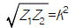
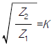
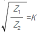
(정답률: 알수없음)
22. 그림과 같은 회로에서 전압 V는 몇 [V]인가? (단, V는 단상교류 전압임.)
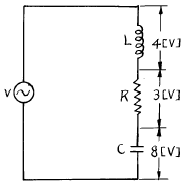
- 1
- 5
- 7
- 15
(정답률: 알수없음)
23. RC직렬 회로망에서 스위치 S가 t=0 일 때 닫혔다고 하면 전류 i(t)는 어느 식으로 표시되는가? (단, 콘덴서에는 초기 전하가 없었다.)
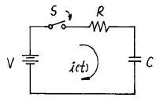
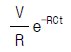
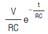
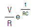
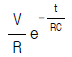
(정답률: 알수없음)
24. 다음 파형 중에서 실효치가 가장 큰 것은?(단, 주기는 모두 동일함)
- 삼각파
- 구형파
- 톱니파
- 정현파
(정답률: 알수없음)
25. S 평면상에서 전달함수의 극점(pole)이 그림과 같은 위치에 있으면 이 회로망의 상태는?
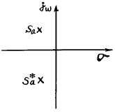
- 발진하지 않는다.
- 점점 더 크게 발진한다.
- 지속 발진한다.
- 감쇄 진동한다.
(정답률: 알수없음)
26. e1=20√2 sinωt, e2=50√2 cos(ωt-(π/6))일 때 e1+e2의 실효치는?
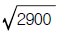
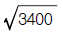
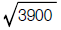
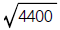
(정답률: 알수없음)
27. 여러개의 기전력을 포함하는 선형 회로망내의 전류분포는 각 기전력이 단독으로 그의 위치에 있을 때 흐르는 전류 분포의 합과 같다는 것은?
- 키르히호프 법칙
- 중첩의 원리
- 테브난의 정리
- 노톤(Norton)의 정리
(정답률: 알수없음)
28. 그림과 같은 정 K형 필터가 있다고 할 때, 이 필터는?
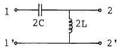
- 중역필터
- 대역필터
- 저역필터
- 고역필터
(정답률: 알수없음)
29. L1=20[H], L2=5[H]인 전자 결합회로에서 결합계수 K=0.5 일 때 상호 인덕턴스 M은 몇 [H]인가?
- 5
- 7.5
- 8
- 9
(정답률: 알수없음)
30. 시정수 τ 를 갖는 R-L 직렬 회로에 직류 전압을 가할 때 t=3τ 가 되는 시간의 회로에 흐르는 전류는 최종치의 몇 %가 되는가?
- 63.2%
- 86.5%
- 95.0%
- 98.2%
(정답률: 알수없음)
31. u(t)를 Laplace 변환하면?
- 1
- 1/s
- s
- ts
(정답률: 알수없음)
32. 대칭 4단자의 영상 임피던스는?
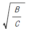
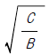
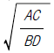
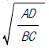
(정답률: 알수없음)
33. 저항 3[Ω], 유도리액턴스 4[Ω]의 직렬회로에 60[㎐]의 정현파 전압 180[V]를 가했을때 흐르는 전류의 실효치는?
- 26[A]
- 36[A]
- 45[A]
- 60[A]
(정답률: 알수없음)
34. 가지(branch)의 수가 5, 마디(node)의 수가 4인 회로망의 모든 독립된 전류를 구하기 위하여 요구되는 키르히호프의 전압 법칙에 의한 방정식의 개수는 최소 몇 개라야 하는가?
- 1개
- 2개
- 4개
- 5개
(정답률: 알수없음)
35. 다음 4단자 정수의 표현이 옳지 않은 것은?
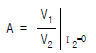
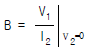
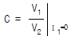
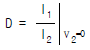
(정답률: 알수없음)
36. 다음 회로에서 Vo(t)의 실효치 전압은?
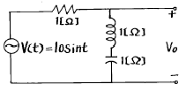
- 0 Vrms
- 10 Vrms
- 10/√2 Vrms
- 10/3 Vrms
(정답률: 알수없음)
37. 다음 그림을 Laplace 변환하면?
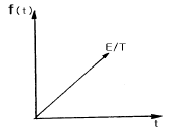
- E / S2
- E / TS
- E / TS2
- TE / S
(정답률: 알수없음)
38. 그림의 회로망에서 y parameter 중 옳지 않은 것은?
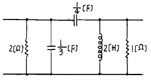
(정답률: 알수없음)
39. 다음 저역필터회로의 차단 주파수에서 전달함수의 값은?
- 1/2
- 1/√2
- 1
- 1.5
(정답률: 알수없음)
40. 그림의 회로망에서 Z21=V2(S)/I1(S)는?
- R/(1+CRS)
- CR/(1+CRS)
- 1/(1+CRS)
- C/(1+RS)
(정답률: 알수없음)
3과목: 전자회로
41. 그림과 같은 B급 푸시풀 증폭기에서 최대 출력 신호전력은?(단, 입력 신호는 정현파이다.)
(정답률: 알수없음)
42. FET에서 포화 드레인 전류(IDS)를 옳게 나타낸 식은? (단, IDSS는 VGS = 0 일 때 드레인 전류이다.)
- IDS=IDSS(1+VGS)2
- IDS=IDSS(1-VGS)2
(정답률: 알수없음)
43. 그림과 같은 회로의 전달 특성을 나타낸 것은?
(정답률: 알수없음)
44. 그림과 같은 회로에서 Y1에서 얻어지는 결과는 무슨 게이트(gate)와 등가인가?
- OR gate
- NOT gate
- AND gate
- Exclusive OR gate
(정답률: 알수없음)
45. 그림의 차동증폭기 회로의 출력 Vo는?
(정답률: 알수없음)
46. 고주파 증폭기에서 α 차단 주파수(α cutoff frequency)는?
- α 가 0.5가 되는 곳의 주파수이다.
- α 가 최대값의 0.707배 되는 곳의 주파수이다.
- 입력과 출력이 동일하게 되는 곳의 주파수이다.
- 출력 전력이 원래값의 1/5로 되는 곳의 주파수이다.
(정답률: 알수없음)
47. 연산증폭기의 응용 회로가 아닌 것은?
- 적분 증폭기
- 미분 증폭기
- 아날로그 가산증폭기
- 디지털 반가산증폭기
(정답률: 알수없음)
48. 그림의 회로에서 RL에 흐르는 전류 IL은?
(정답률: 알수없음)
49. 소신호 증폭기 차단 주파수에서의 이득은 최대 이득의 몇 [%]인가?
- 60.6
- 70.7
- 75.5
- 78.5
(정답률: 알수없음)
50. 다음과 같은 Comparator 회로에서 입력에 정현파를 인가하면 출력파형은?
- 구형파형
- 정현파형
- ramp파형
- 톱날파형
(정답률: 알수없음)
51. 그림의 회로에서 궤환비 β 는?
- -Re
- Re
(정답률: 알수없음)
52. 10112를 Gray Code로 변환하면?
- 1111
- 1110
- 1010
- 1011
(정답률: 알수없음)
53. 그림의 발진회로에서 Z3가 인덕턴스일 때 이 발진회로는?
- R-C
- 브리지
- 콜피츠
- 하트레이
(정답률: 알수없음)
54. 트랜지스터 캐스코드(cascode)회로를 이미터접지증폭기와 비교한 것 중 옳지 않은 것은?
- 입력저항은 비슷하다.
- 출력저항은 비슷하다.
- 전류이득은 비슷하다.
- 전압 궤환율은 적어진다.
(정답률: 알수없음)
55. 이미터 접지 증폭기에서 입력 개방 출력 어드미턴스에 해당되는 h 파라미터는?
- hie
- hfe
- hre
- hoe
(정답률: 알수없음)
56. 그림과 등가인 게이트는?
(정답률: 알수없음)
57. 배타적 OR(Exclusive OR)과 AND gate의 기능을 동시에 갖는 회로는?
- 플립플롭 회로
- 래치 회로
- 전 가산기 회로
- 반 가산기 회로
(정답률: 알수없음)
58. 2진수 1011.01101를 8 진수로 고친 것 중 옳은 것은?
- 13.32(8)
- 15.31(8)
- 13.31(8)
- 15.15(8)
(정답률: 알수없음)
59. 그림의 연산 증폭기 회로는?
- 전압증폭기
- 전류증폭기
- 정전압 회로
- 정전류 회로
(정답률: 알수없음)
60. 다음 회로의 기능은?
- 평형 변조기
- 배전압 정류기
- 푸시-풀 증폭기
- 단상 전파 정류기
(정답률: 알수없음)
4과목: 물리전자공학
61. 500[V] 전압으로 가속된 전자의 속도는 10[V]의 전압으로 가속된 전자 속도의 몇 배인가?
- √2
- 5√2
- 10√2
- 50
(정답률: 알수없음)
62. 서미스터(thermistor) 용도로 옳지 않은 것은?
- 트랜지스터 회로의 온도 보상
- 마이크로파 전력 측정
- 온도 검출
- 발진기
(정답률: 알수없음)
63. 1[coulomb]의 전하를 얻을려면 전자는 몇 개가 필요한가? (단, e=1.602×10-19[C])
- 6.24×1016[개]
- 6.24×1018[개]
- 6.24×1020[개]
- 6.24×1022[개]
(정답률: 알수없음)
64. 전자의 운동량(P)와 파장(λ ) 사이의 드브로이(DeBroglie) 관계식은?(단, h는 Plank 상수)
- P=λh
(정답률: 알수없음)
65. 정공의 확산 계수 Dp=55[cm2/sec]이고, 정공의 평균 수명τP=10-6[sec]일 때의 확산 길이는 약 얼마인가?
- 6.3×103[cm]
- 6.3×10-3[cm]
- 7.4×103[cm]
- 7.4×10-3[cm]
(정답률: 알수없음)
66. 펀치 스루(punch through) 현상에 대한 설명으로 옳지 않은 것은?
- 이미터, 베이스, 컬렉터의 단락 상태이다.
- 펀치스루 전압은 베이스 영역 폭의 제곱에 비례한다.
- 컬렉터 역 바이어스의 증가에 의해 발생하는 현상이다.
- 펀치스루 전압은 베이스 내의 불순물 농도에 반비례한다.
(정답률: 알수없음)
67. CCD(Charge-coupled device)의 동작 원리와 가장 유사한 동작 원리의 전자 소자는?
- MOS FET
- 접합 트랜지스터
- 서미스터
- 제너 다이오드
(정답률: 알수없음)
68. 모노리딕 IC의 장점이 아닌 것은?
- 경제적이며, 대량 생산이 가능하다.
- 정밀도가 높고, 온도 특성이 우수하다.
- 다수의 칩을 한데 묶어 LSI도 구성시킬 수 있다.
- 동일한 칩에 트랜지스터, 다이오드, 저항, 콘덴서의 수용이 가능하다.
(정답률: 알수없음)
69. 마치 3극관이 음극에서 양극에 향하는 전자류를 격자에 의하여 제어하듯이 N형(또는 P형) 반도체 내의 전자(정공)의 흐름을 제어하는 것은?
- FET(Field Effect Transistor)
- SCR(Silicon Controlled Rectifier)
- TRIAC(트라이액)
- UJT(UniJunction Junction Transistor)
(정답률: 알수없음)
70. 스위칭 시간이 대단히 짧으므로 고속 스위칭 회로에 사용되는 소자는?
- 제너 다이오드
- SCR
- 터널 다이오드
- UJT
(정답률: 알수없음)
71. 열전자 방출용 재료로 적합하지 않은 것은?
- 일함수가 큰 것
- 융점이 높은 것
- 방출 효율이 좋은 것
- 가공, 공작이 용이한 것
(정답률: 알수없음)
72. 에너지 준위도에서 0 준위는?
- 페르미 준위
- 이탈 준위
- 금속내 준위
- 금속외 준위
(정답률: 알수없음)
73. 열전자 방출에서 전자류가 온도 제한 영역에 있어서도 플레이트 전위의 상승에 의해 더욱 증가하는 현상은?
- 쇼트키 효과
- 펠티어 효과
- 지벡 효과
- 홀 효과
(정답률: 알수없음)
74. 2차 전자 방출의 영향을 특히 억제토록 설계된 것은?
- 가변 증폭관
- 전자증 배관
- 4극 진공관
- 5극 진공관
(정답률: 알수없음)
75. Fermi 에너지에 대한 설명으로 옳지 않은 것은?
- 온도에 따라 그 크기가 변한다.
- 캐리어 농도에 따라 그 크기가 변한다.
- 상온에서 전자가 점유할 수 있는 최저 에너지이다.
- 0° K에서 전자가 점유할 수 있는 최고 에너지이다.
(정답률: 알수없음)
76. 두 도체 또는 반도체의 폐 회로에서 두 접합점의 온도차로서 전류가 생기는 현상은?
- 홀(Hall) 효과
- 광전 효과
- 펠티어(Peltier) 효과
- 지벡(Seebeck) 효과
(정답률: 알수없음)
77. 저온에서 반도체 내의 캐리어(carrier) 에너지 분포를 나타내는데 가장 적절한 것은?
- 2차 분포함수
- Fermi-Dirac 분포함수
- Bose-Einstein 분포함수
- Maxwell-Boltzmann 분포함수
(정답률: 알수없음)
78. P형 불순물 반도체에서 전자의 농도를 나타낸 것은?(단, Na는 억셉터의 농도, ηi는 진성반도체에서 캐리어의 농도)
- Na-ηi
- Na+ηi
(정답률: 알수없음)
79. 진성 반도체에서 온도가 상승하면?
- 반도체의 저항이 증가한다.
- 원자의 에너지가 증가한다.
- 정공이 전도대에 발생된다.
- 금지대가 감소한다.
(정답률: 알수없음)
80. 피에조 저항(piezo resistance)은?
- 압력 변화에 의한 저항의 변화이다.
- 자계 변화에 의한 저항의 변화이다.
- 온도 변화에 의한 저항의 변화이다.
- 광전류 변화에 의한 저항의 변화이다.
(정답률: 알수없음)
5과목: 전자계산기일반
81. 다음 프로그램 중에서 성격이 전혀 다른 것은?
- Data management program
- Job management program
- Supervisor program
- Service program
(정답률: 알수없음)
82. 기억된 데이터의 내용에 의해서 그 위치를 접근하는 방식은?
- Cache Memory
- Virtual Memory
- Associative Memory
- Multiple Module Memory
(정답률: 알수없음)
83. CPU의 수행 상태를 나타내는 주상태(Major State) 중에서 메모리로부터 실행하기 위한 다음 명령의 번지를 결정한 후 메모리로부터 명령을 CPU로 읽어들이는 동작은?
- Fetch 상태
- Indirect 상태
- Execute 상태
- Interrupt 상태
(정답률: 알수없음)
84. 스택과 관련된 PUSH 및 POP 명령어의 명령 형식과 가장 관계가 깊은 것은?
- 3-address
- 2-address
- 1-address
- 0-address
(정답률: 알수없음)
85. 단항(unary) 연산에 속하지 않는 것은?
- MOVE 연산
- Complement 연산
- Shift 연산
- OR 연산
(정답률: 알수없음)
86. 컴퓨터에서 주소와 기억장소를 결부시키는 것을 무엇이라 하는가?
- Interrupt
- Mapping
- Merging
- Overlapping
(정답률: 알수없음)
87. 어셈블리 언어로 프로그래밍 할 때 서브루틴 사용시 미리 고려할 사항이 아닌 것은?
- 스택 영역을 확보한다.
- 스택포인터를 초기화한다.
- 레지스터의 중복 사용을 가능한 배제한다.
- 서브루틴 실행 후 복귀(return) 번지를 결정한다.
(정답률: 알수없음)
88. 10진 카운터(counter) 회로를 설계하기 위해서 몇 개의 단으로 구성해야 되는가?
- 2단
- 4단
- 8단
- 10단
(정답률: 알수없음)
89. 어드레싱(addressing) 방법이 아닌 것은?
- direct addressing
- indirect addressing
- relative addressing
- temporary addressing
(정답률: 알수없음)
90. 데이터 흐름을 중심으로 시스템 전체의 작업 내용을 총괄적으로 표시하는 순서도는?
- 개략 순서도
- 시스템 순서도
- 상세 순서도
- 프로그램 순서도
(정답률: 알수없음)
91. C-언어의 특징 중 옳지 않은 것은?
- 연산자가 풍부하지 못하다.
- C는 포인터와 주소를 계산할 수 없다.
- C 언어 자체에는 입ㆍ출력 기능이 없다.
- 데이터에는 반드시 형(type) 선언을 해야 한다.
(정답률: 알수없음)
92. 인터럽트의 종류 중 입ㆍ출력장치, 타이밍장치, 전원등의 요인에 의해 발생되는 인터럽트는?
- 기계 인터럽트
- 외부 인터럽트
- 내부 인터럽트
- 소프트웨어 인터럽트
(정답률: 알수없음)
93. 프로세서를 경유하지 않고 데이터를 직접 메모리와 입ㆍ출력하는 방식은?
- Strobe 방식
- Flag 검사 방식
- DMA 방식
- Hand-Shaking 방식
(정답률: 알수없음)
94. 인터럽트를 발생시키는 모든 장치들을 직렬로 연결하고 우선 순위가 높은 순서로 연결하는 방식은?
- Vectored Interrupt
- DMA
- Daisy-Chain
- Polling
(정답률: 알수없음)
95. 희박한 행렬(sparse matrix)을 표현하는 방법으로 적합한 자료구조는?
- 큐(queue)
- 연결 리스트(linked list)
- 스택(stack)
- 트리(tree)
(정답률: 알수없음)
96. 65가지의 서로 다른 사항들에 각각 다른 2진 코드 값을 주고자 한다. 이 경우 최소한 몇 비트가 요구되는가?
- 6
- 7
- 8
- 9
(정답률: 알수없음)
97. 레지스터에 계수의 기능을 갖춘 것은?
- 레지스터
- 스택 포인터
- PC
- AC
(정답률: 알수없음)
98. 특정의 비트 또는 문자를 삭제하기 위한 적의 연산 방법은?
- Complement 연산
- OR 연산
- AND 연산
- MOVE 연산
(정답률: 알수없음)
99. 다음의 구성은 무엇을 나타내는가?
- 중앙처리장치
- 산술논리연산장치
- 제어장치
- 입ㆍ출력 처리기
(정답률: 알수없음)
100. 조합(combinational) 논리 회로에 대해 설명한 것은?
- 출력 신호가 입력 신호에 의해서만 결정되는 논리 회로이다.
- 플립플롭과 같은 기억 소자를 갖고 있는 논리 회로이다.
- 출력 신호가 입력 신호와 현재의 논리 회로의 상태에 의해 결정되는 논리 회로이다.
- 기억 능력을 가진 논리 회로이다.
(정답률: 알수없음)
전전류 밀도 J는 자계 H와 전기 유도 강도 E의 관계로 J = σE이다. 자유공간에서는 전하가 존재하지 않으므로 전기 유도 강도는 회전하지 않는다. 따라서 E = -∇φ로 표현할 수 있다. 여기서 φ는 전위이다.
전위는 전기장과 관련이 있다. 자유공간에서는 전기장이 존재하지 않으므로 전위는 일정하다. 따라서 전전류 밀도는 일정하다.
적분 경로는 y=0인 면을 수직으로 통과하므로, 적분 결과는 면적의 반만큼이 된다. 따라서 전전류는 0.5A이다.